남티롤(Südtirol) 이야기 (2) - 하얀 전쟁
게시: 2026-05-28T06:30:00+09:00
런던 조약의 결과로 이탈리아는 오스트리아와 격전을 벌이게 되었는데, 그와 관련된 명작 소설이 바로 헤밍웨이의 '무기여 잘 있거라' (A Farewell to Arms) 입니다. 이 소설을 읽어보신 분들은 아시겠습니다만, 이탈리아는 이 전쟁에서 그다지 인상적인 전과를 올리지는 못했습니다. 주인공 프레드릭 헨리가 소설 초반부에 주둔하고 있던 곳은 고리치아(Gorizia)였는데, 원래 고리치아는 WW1 발발 직전까지도 수백년간 스트리아 영토였습니다. 그런데 이 고리치아는 물론이고 훨씬 더 오스트리아쪽, 정확하게는 슬로베니아 쪽에 있던 항구 도시 트리에스테(Trieste)도 모두 이탈리아어를 쓰는 주민들이 다수였던 이탈리아계 도시였습니다.
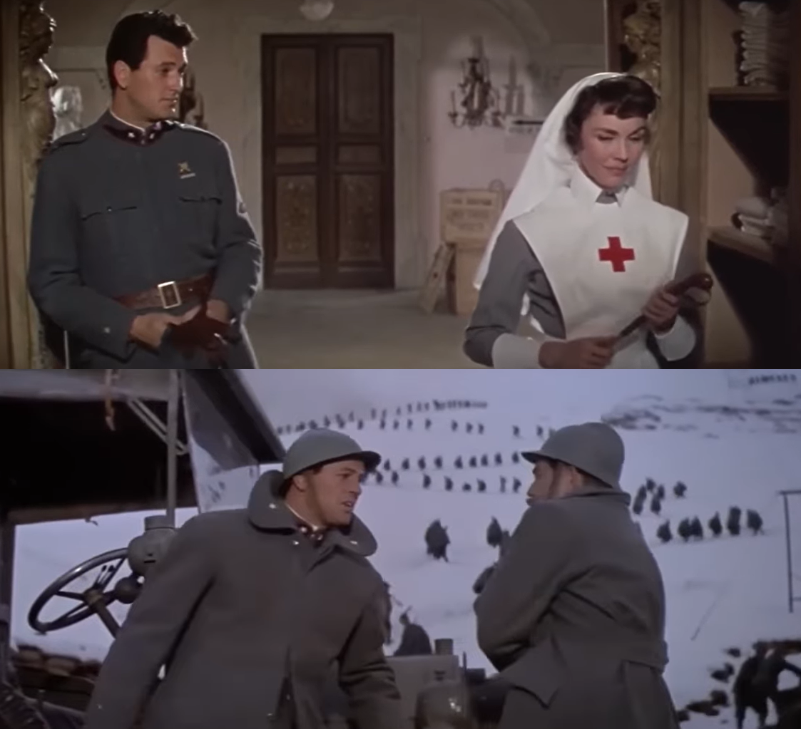
('무기여 잘있거라'는 2번 영화화 되었는데, 1957년 작품에서는 록 허드슨(Rock Hudson)이 주인공 헨리 역을 맡았습니다. 여자 주인공은 Jennifer Jones라는데, 저는 누군지 잘 기억나지 않네요. 저 영화 속에서도 산악지대를 통과하여 전진하는 장면이 나오는데, 원래 소설 속 배경에 산악지대가 나오긴 하지만 돌로미티 일대는 아니었습니다.) 가령 고리치아는 오스트리아의 니스(Nice)라고 불릴 만큼 기후가 온화해 제국의 귀족들이 휴양하러 오던 다민족 도시로서, 이탈리아계와 슬로베니아계가 주종을 이루고 있였는데, 도시 외곽 주변에는 슬로베니아계 주민들이 70% 넘는 비중을 차지하고 있었지만 부유한 도심지에는 거의 50%가 이탈리아계였습니다. 또 당시 오스트리아 제국 유일의 거대 무역항이자 제4의 도시로 번영을 누리던 트리에스테는 전체 주민 중 70% 가까이가 이탈리아인이었고, 시청과 법정에서의 공식 언어로 이탈리아어였습니다. 그런데도 오스트리아 제국의 통치하에 있었으니, 통일 이탈리아 왕국 건설의 영웅 가리발디가 '이탈리아의 미수복 영토'라며 이를 갈던 것이 이해는 가는 일이었습니다. WW1 개전 당시 독일-오스트리아와 함께 삼국동맹(Triple Alliance)의 하나였던 이탈리아가 당연히 자기들 편에서 참전하리라 예상하던 이탈리아가 이상하게도 미적거리다 갑자기 연합군으로 참전하여 오스트리아의 등 뒤를 찌른 것에 대해 오스트리아는 크게 분개했으나, 사실 대비는 하고 있었습니다. 사실 이탈리아군의 공세는 지나치게 신중하고 느려서, 낌새가 이상하다고 느낀 오스트리아가 러시아 전선에서 병력을 빼내어 이손초(Isonzo) 강을 중심으로 방어진을 형성해놓고 있었기 떄문에, 이탈리아군의 전과는 지지부진했습니다. 그나마 고리치아를 점령한 것이 거의 최대 성과였습니다.
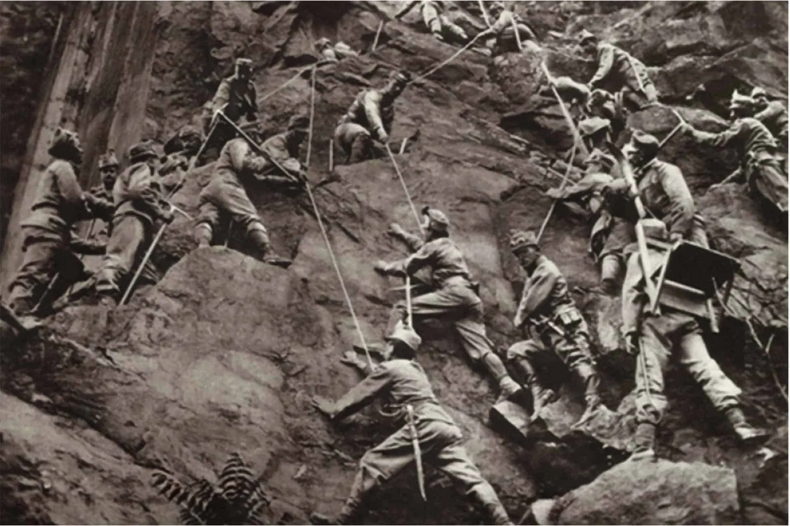
(WW1 당시 이손초 전선에서의 모습입니다. 이손초 계곡은 돌로미티 같은 산악지대는 아니지만 슬로베니아에서 가장 경치가 좋은 계곡 지대를 끼고 있어서, 저렇게 험한 지형도 꽤 있었나 봅니다.)
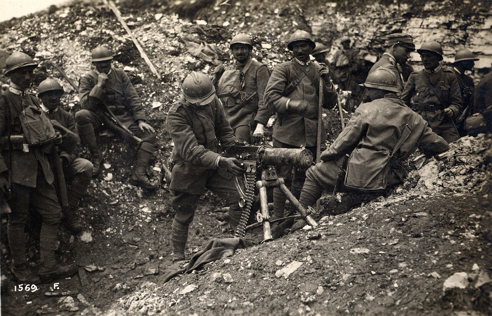
(1916년 이손초 전선에서 오스트리아군 기관총좌를 빼앗은 이탈리아군의 모습입니다.)
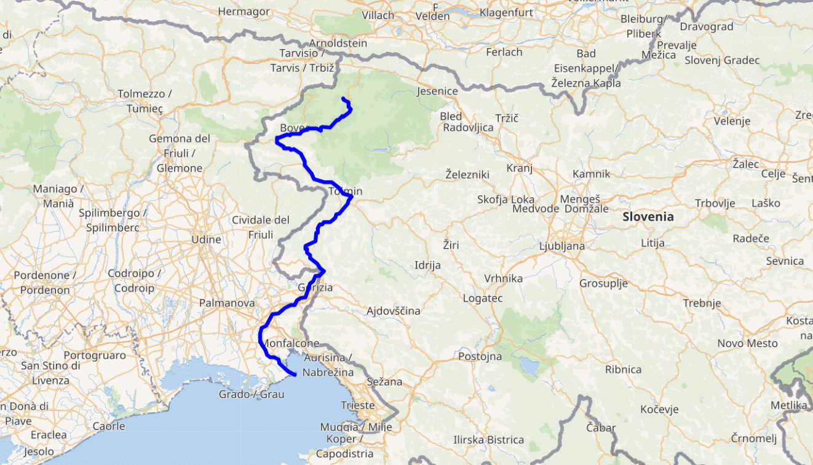
(이손초 강의 지도입니다. 이손초 강이라는 것은 이탈리아 이름이고, 슬로베니아 이름은 소차(Soča) 강입니다. 저 일대는 지금은 대부분 슬로베니아 영토입니다.) 그런데 이탈리아로서는 트리에스테를 향해 병력을 집중할 수 없던 이유가 있긴 했습니다. 알프스 언저리인 좌측면, 그러니까 트렌티노(Trentino) 지방이 오스트리아군 손에 있었기 때문에, 그쪽에 대해 방비하지 않으면 언제든 옆구리를 찔려 낭패에 빠질 수 있었던 것입니다. 그래서 개전 초기부터, 이 트렌티노 지방의 험악한 산악지대에도, 어떻게 보면 지나치다 싶을 정도의 병력을 투입하여 산악전을 펼쳤습니다. 주로 트렌토와 볼차노 동쪽 지대에서 벌어진 이 돌로미티 산맥에서의 전투들을 묶어서 '하얀 전쟁'(Guerra Bianca)이라고 부릅니다.
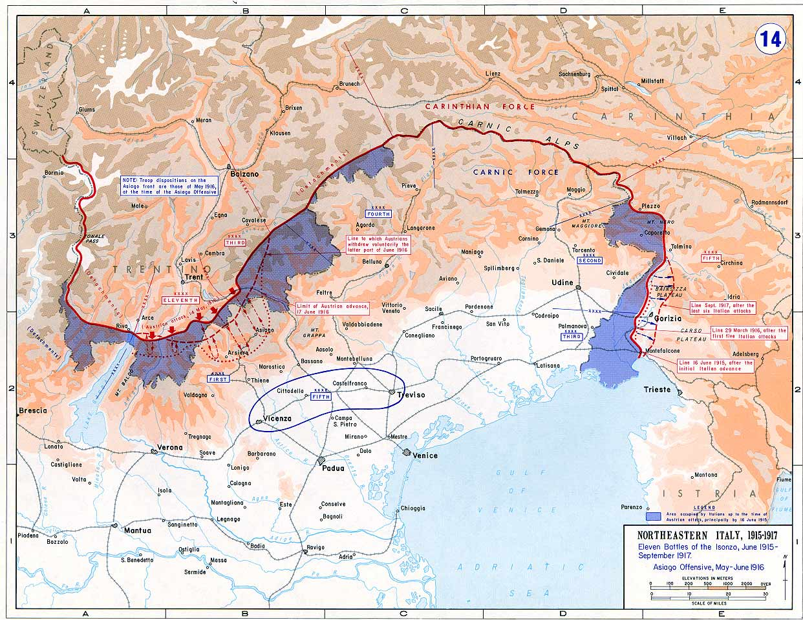
(1915~1917년 사이의 이탈리아군의 점령 지역이 남색으로 표시된 지도입니다. 요란하게 쳐들어간 것 치고는 대단한 전과는 아닌 것을 보실 수 있습니다. 오히려 북쪽 측면인 돌로미티 산악지대에서의 점령 지역이 약간 더 커보입니다.)
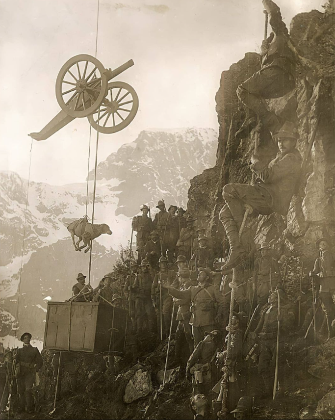
(하얀 전쟁의 상징적인 사진입니다. 1915년, 돌로미티 산맥의 어느 절벽으로 야포와 개, 화물을 도르래로 끌어올리는 이탈리아군의 모습입니다. 전쟁터에 웬 개냐, 이탈리아군답다, 아마 저 상자 속에는 와인병이 들어있을 것이다 등등의 이야기가 있지만, 실은 WW1 당시 개는 전선에서 위로를 주는 반려 목적 뿐만 아니라 전령 역할도 했습니다.)
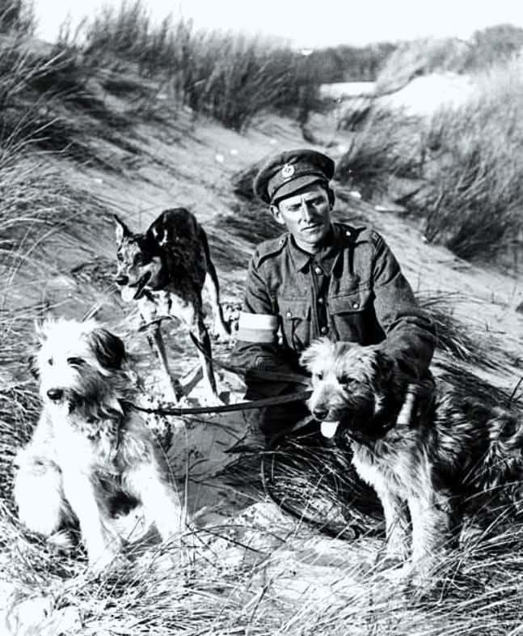
(WW1 당시 전령 목적으로 개를 데리고 있던 것은 영국군도 마찬가지였습니다. WW1 당시 영국군의 전령용 군견과 그 당번병입니다. 의외로 순종 셰퍼드 같은 개가 아니라, 그냥 버려진 잡종견들을 썼다고 하네요?)
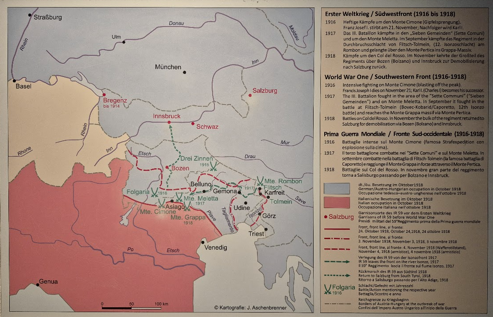 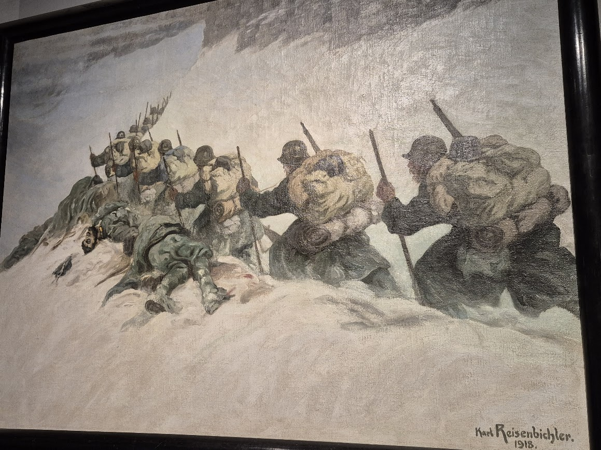 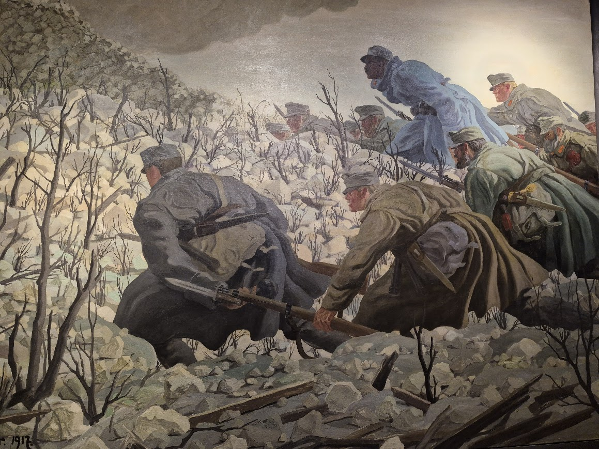 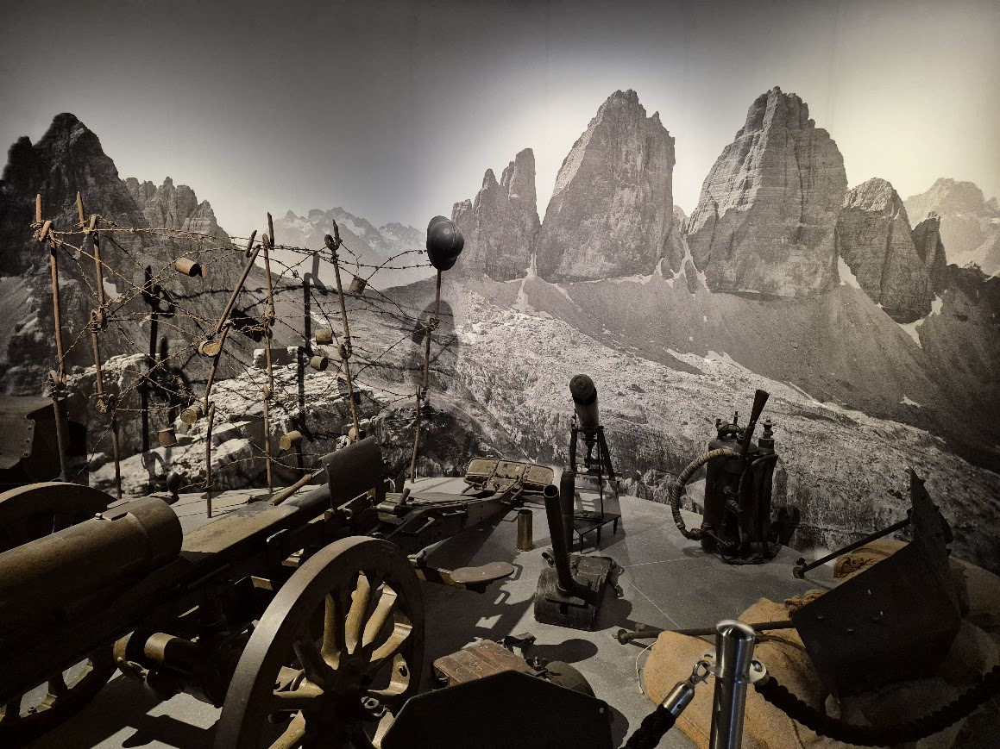 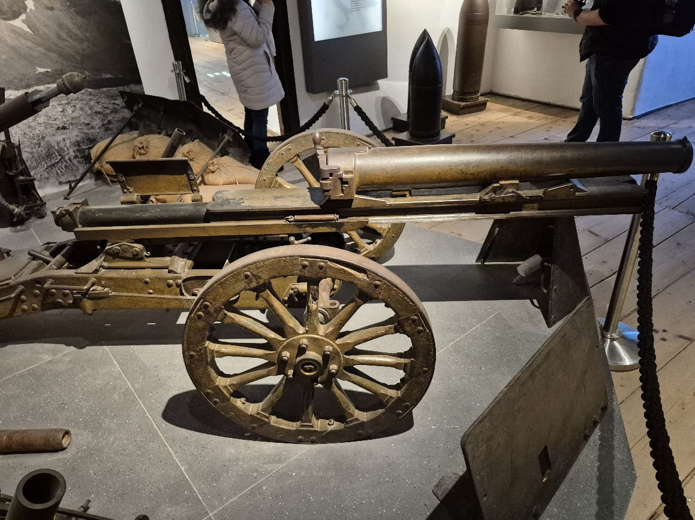 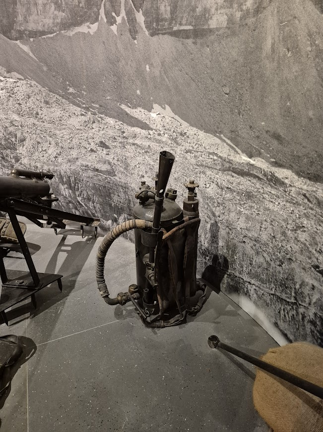
(이 사진들은 제가 오스트리아 잘츠부르크에 있는 호헨잘츠부르크 성에 전시된 것들 중 하얀 전쟁 관련된 전시품들을 찍은 것입니다. 맨 마지막 사진은 그 산악전에서도 사용된 화염방사기입니다.)
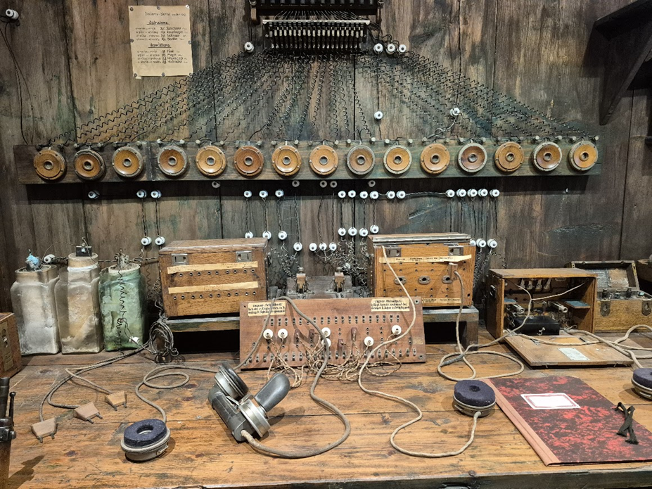
(그 전시품들 중 이 통신시설 관련 전시품은 몬테 치모네(Monte Cimone) 전투 당시 운영되었던 전화 교환대를 충실하게 복원한 것인데, 이건 당시 전화 통신을 담당했던 프란츠 로젠크란츠(Franz Rosenkranz) 대위 덕분이었습니다. 설명에 따르면 그는 종전 이후에도 오스트리아군 장교로 복무했는데, 1934년 람프레히츠하우젠(Lamprechtshausen)에서 일어난 국가사회주의당, 즉 나치들의 폭동을 진압하는 명령을 수행했습니다. 당연히 그는 나치에게 찍혔고, 1938년 오스트리아가 나치 독일에 합병된 이후 수감되었으며, 결국 정치범들을 주로 수용했던 작센하우젠(Sachsenhausen) 강제수용소에서 목숨을 잃었습니다.) 상식적으로 이런 지형에서는 제대로 된 전투, 특히나 대규모 전투는 일어날 수가 없습니다. 그런데도 이 '하얀 전쟁'에는 양측 모두 10만 단위의 엄청난 병력을 투입했고, 또 양측 모두 깜짝 놀랄 정도의 손실율을 내서 양측 도합 16만 정도의 사망자를 냈습니다. 예상하시는 대로, 전체 사망자의 2/3 정도는 전투가 아니라 추위와 굶주림, 추락, 눈사태 등으로 인한 것이었습니다. 가령 1916년 12월의 '하얀 금요일' 사건은 매우 끔찍하여, 마르몰라다(Marmolada) 산 일대에 주둔하고 있던 양측 병사들 약 1만 명이 눈사태로 목숨을 잃었습니다. 전해지는 바에 따르면 이때 이탈리아군이나 오스트리아군이나, 모두 쌍방 머리 위에 눈사태를 일으키려고 상대측 머리 위의 산등성이에 포격을 퍼붓고 있었다고 합니다.
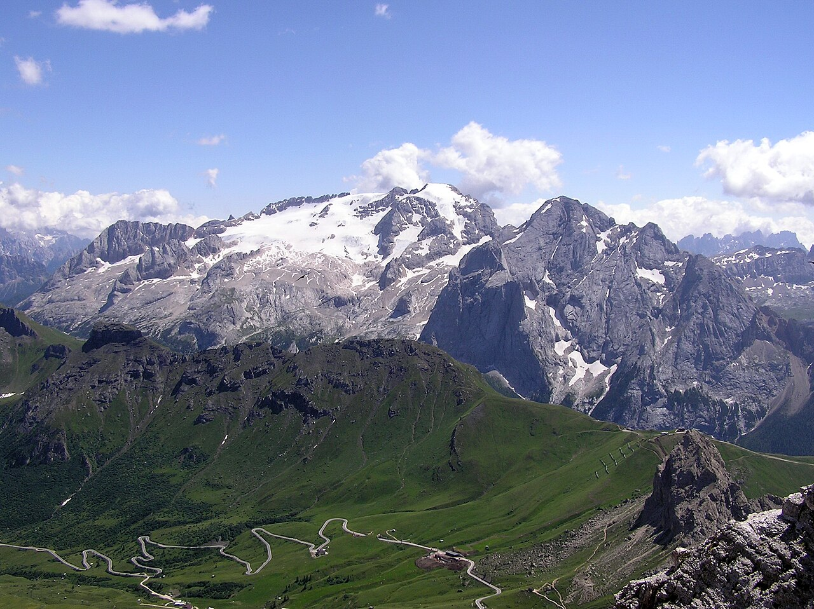
(하얀 금요일 사건이 벌어진 마르몰라다 산입니다. 돌로미티 산맥 중 가장 높은 3,343m의 높이의 봉우리입니다. 실은 1916년 12월의 하얀 금요일 사건은 정말 금요일 하루에 일어난 비극은 아니었고, 그 전후로 발생한 일련의 눈사태와 그에 따른 희생을 일컫는 말입니다.)
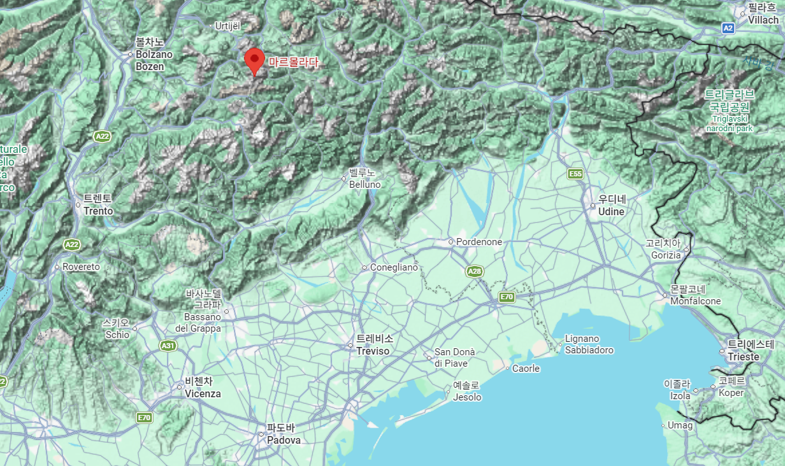
(마르몰라다 산의 위치입니다. 하얀 전쟁 대부분이 저 일대에서 벌어졌습니다.) 어떻게 생각하면 저런 지형에는 대규모 병력을 투입할 것도 없이 그냥 주요 길목과 고지에 대포를 동반한 수비 병력을 배치하고 상대가 넘어오지 못하도록 하기만 하면 되는 거 아닌가 싶은데, 실제로 오스트리아도 적어도 처음에는 그런 식으로 대응했습니다. 그러나 양측 모두 상대가 이 산악지대를 통해 병력을 투입하여 자신의 약한 옆구리를 찌르는 것 아닌가 싶어 점점 더 많은 병력을 투입하게 된 것입니다. 나폴레옹 휘하의 이탈리아군이 자신들을 기다리는 운명도 모른채 1812년 러시아로 가기 위해 노래를 부르며 흥겹게 넘었다는 브렌너 고개길(Passo del Brennero)에는 이미 19세기 후반에 기차길이 개통되어 있었으므로, 오스트리아는 그를 통해 얼마든지 대군을 트렌티노 방면에 투입하여 이손초 전선의 이탈리아군 후방을 노릴 수 있었습니다. 또 반대로 오스트리아도 거기를 빼앗기면 이탈리아군이 잘츠부르크나 심지어 빈으로 곧장 쳐들어올 수도 있었으므로 안심할 수가 없었습니다.
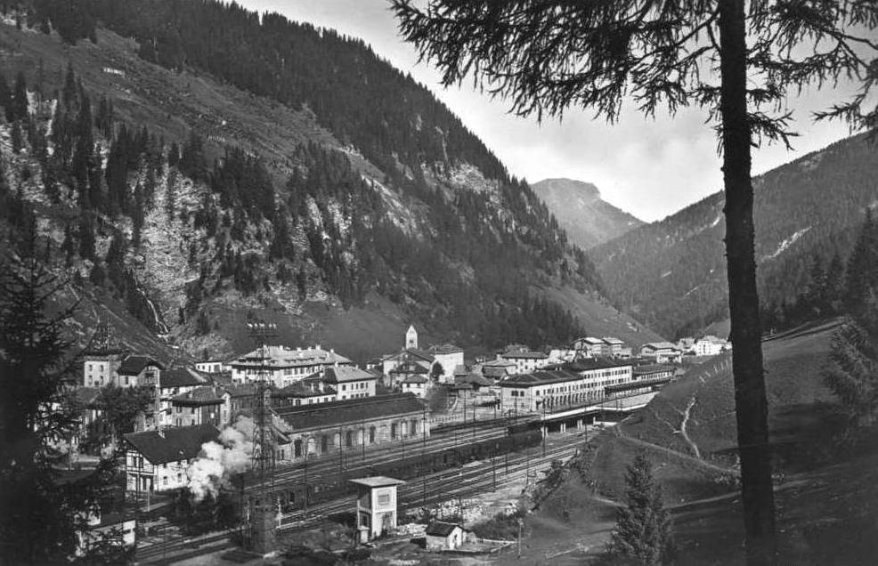
(브렌너 기차역은 해발 1,371m에 위치한 매우 높은 기착역이고, 1861년 오스트리아가 만들었습니다. WW1에서 승리한 이탈리아가 소원대로 이 브렌너 고개를 국경으로 정하면서, 기차역도 빼앗아왔습니다. 다만 원래 이 기차역은 고개길 정점에서 오스트리아쪽으로 살짝 넘어간 쪽에 있었기 때문에, 이탈리아는 이 기차역을 뜯어서 300m 정도 이탈리아 국경쪽으로 옮겼고, 그 상태로 지금까지 이어지고 있습니다. 이 사진은 이미 그렇게 옮겨진 후의 모습입니다. 그땐 몰랐는데 작년 가을 여행 때 제가 볼차노에서 오스트리아 인스부르크로 넘어갈 때도 바로 저 기차역을 통해서 넘어갔더라고요. 미리 알았다면 잠깐 내려서 사진이라도 찍는 건데 그랬어요. 그때 전 그래도 국경을 넘는 거니까 국경 수비대가 객차 안에 들어와서 쓱 둘러보기라도 할 줄 알았는데 정말 아무런 그런 절차 없이 그냥 국경을 통과하더군요.) 실제로 1916년 5월~7월에는 오스트리아가 '이탈리아의 배신을 응징한다'라는 의미의 '징벌공세'(Strafexpedition, 글자 그대로 벌을 주기 위한 공격이라는 뜻의 독일어, 영어로는 그냥 그 일대의 지명을 따서 아시아고(Asiago) 전투)를 가했습니다. 이때 오스트리아군은 파죽지세로 진격하여 5월 말에는 핵심 요충지인 아시아고(Asiago)와 아르시에로(Arsiero)를 차례로 점령했고, 고원 아래쪽 베네토 평야 지대의 거점 도시인 비첸차(Vicenza)까지는 불과 30km를 남겨둔 곳까지 진격했었습니다. 이탈리아군은 완전히 허를 찔려 이대로라면 베네치아까지 무너질 판국이라며 전전긍긍하며, 공격해오는 오스트리아군보다 훨씬 더 많은 수의 사상자를 내며 필사적으로 반격했습니다. 그러나 결국 러시아 전선에서 러시아군이 대대적인 브루실로프(Brusilov) 공세를 펼치면서 동부 전선이 위험해지자, 오스트리아군 병력도 동부전선으로 차출되느라 징벌공세는 자연스럽게 중단되어 버려 이탈리아군은 한시름을 놓을 수 있었습니다.
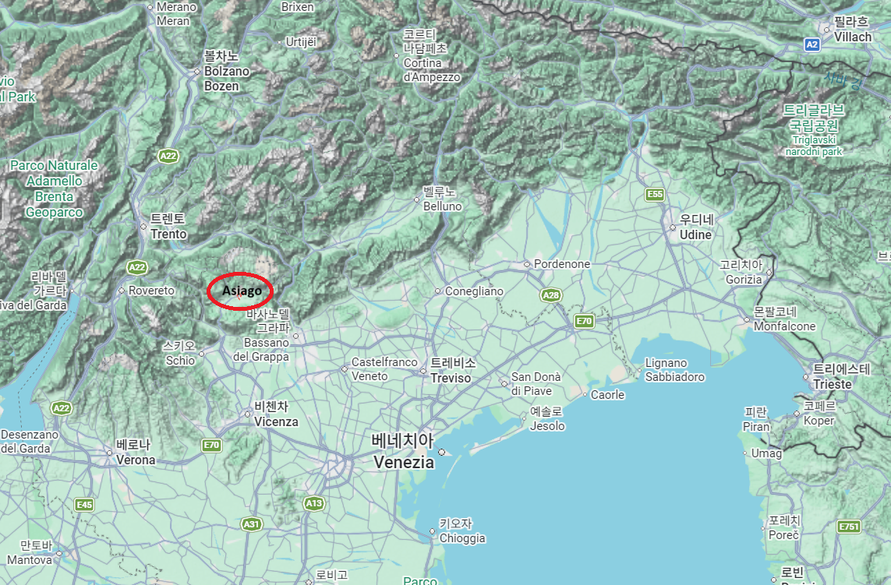
(아시아고의 위치입니다. 정말 저기까지 점령당했다는 것은 베네토 평원이 다시 한 번 오스트리아 군홧발에 짓밟힐 위기였다는 뜻입니다.)
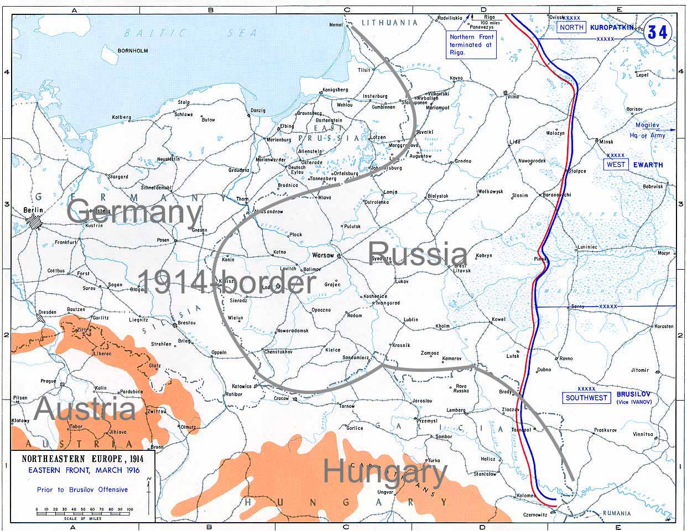
(위기의 베네토 평원을 구출한 것은 뜬금없는 러시아 장군 브루실로프였습니다. 브루실로프는 1916년 갈리시아, 그러니까 위 지도의 우하단 부분에서 대공세를 펼쳐 오스트리아 국경 안까지 상당부분 진격할 수 있었습니다. 이 공세가 WW1 기간 중 러시아군의 최대 전공이었습니다. 위 지도에서 회색선이 WW1 이전의 러시아 국경선입니다.) 여태까지 보셨다시피, 이탈리아군의 실력은 런던 비밀 조약 체결시 보여준 이탈리아의 영토적 야심을 채워주기에는 너무나 초라했습니다. 그나마 오스트리아 땅을 조금이라도 점령했다는 것이 이탈리아군의 자랑이었는데, 그 작은 자랑거리까지 무너지는 사태가 발생합니다. 바로 '무기여 잘 있거라'에서 주인공 헨리가 탈영하게 되는 계기가 되는, 1917년 10월~11월의 카포레토(Caporetto) 전투였습니다. 이탈리아와의 소모전에 지친 오스트리아군은 결국 독일에게 도움을 요청했는데, 그 결과 후티어(Oskar von Hutier) 장군의 침투 전술을 구사하는 독일군 돌격대(Stosstruppen)를 앞세운 새로운 공세가 카포레토에서 펼쳐진 것입니다. 독가스와 돌격대를 앞세운 새로운 전술에 이탈리아군의 최전선은 삽시간에 돌파되었을 뿐만 아니라, 그 일대의 이탈리아군은 공포에 사로잡혀 이손초 전선 전체가 붕괴되어 버렸습니다.
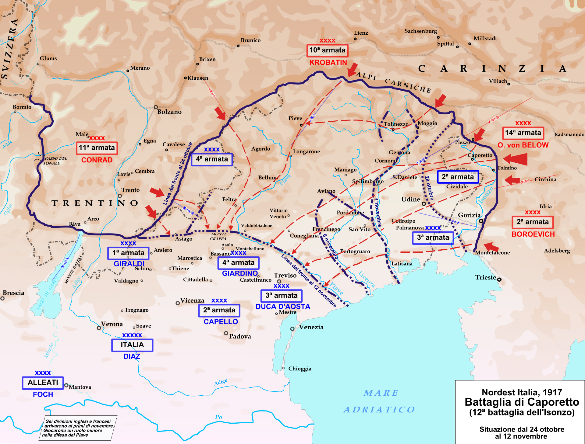
(카포레토 전투의 상황도입니다. WW1 초기엔 이탈리아군이 공세를 취하는 입장이었으나 많은 희생자를 냈음에도 전과는 신통치 않아 오스트리아 국경 안쪽으로 별로 치고 들어가지 못했으며, 오히려 독일군의 지원을 받아 반격에 나선 오스트리아군에게 우르르 전선이 무너졌던 것이 카포레토 전투입니다. 이탈리아는 트렌토와 트리에스테 등을 오스트리아로부터 빼앗겠다고 WW1에 뛰어들었으나, 정작 그 근처까지도 못 갔습니다.)
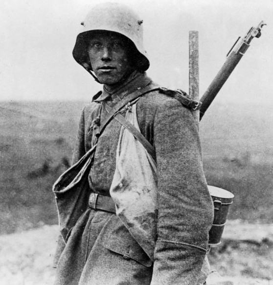
(독일군 돌격대원의 모습입니다. 사실 수류탄을 다량으로 사용했다는 것 외에는 장비 등은 따로 대단할 것이 없습니다. 이들의 핵심은 더 많은 자율권을 가진 부사관을 중심으로 하는 분대 단위 전술을 써서 우회 침투, 후방 교란 등의 임무를 수행했다는 것입니다.)

(이때 이탈리아군을 공격했던 독일군 뷔르템베르그(Württemberg) 산악 대대의 중위가 바로 젊은 에르빈 롬멜이었습니다. 이 사진은 1917년의 모습입니다. 롬멜은 이 공세에서 프로이센 최고의 무공훈장인 'Pour le Mérite' (불어 맞습니다, '전공을 치하하며'라는 뜻인데, 프랑스빠인 프리드리히 2세가 만든 것이라서 어쩔 수가 없었답니다)을 받았습니다.) 카포레토 전투로 인해 이탈리아군은 한 달 만에 베네치아 바로 앞인 피아베(Piave) 강까지 약 150km를 밀려났습니다. 오스트리아-독일 연합군이 조금만 더 밀고 내려오면 아예 항복 또는 단독 강화협상을 맺고 전쟁에서 이탈헤야 할 판국이었습니다. 비교적 신생 국가였던 이탈리아 왕국은 이러다 다시 나라가 망한다는 위기감에 18세의 소년들까지도 징집했고, 또 이탈리아의 이탈을 막기 위해 프랑스군과 영국군이 지원차 투입되는 등의 비상조치를 통해 간신히 피아베강 전선을 지켜냈습니다. 결국 그런 상태로 지지부지하던 이탈리아 전선은 사실상 연합군의 승리가 굳어진 1918년 10월 말부터 전쟁 종료(11월 4일) 직전까지 감행된 이탈리아군의 최종 대공세인 비토리오 베네토 전투(Battle of Vittorio Veneto)를 통해 이탈리아의 빛나는 승리로 포장됩니다. 이미 패배가 확정된 것이나 다름없던 오스트리아-헝가리군은 이탈리아군이 공격하기 이전에도 사실상 붕괴직전이었습니다. 독일계, 헝가리계, 슬라브계, 루마니아계, 심지어 이탈리아계 등 다양한 민족으로 구성되었던 오스트리아군은 패색이 역력한 이 전쟁에서 자신들이 대체 왜 싸워야 하는지 심각한 의문을 가지고 있었습니다. 특히 1918년 10월에는 그리스 살로니키에서 출발한 프랑스군 중심의 연합군이 발칸 반도를 북상하며 불가리아를 항복시키자, 당장 남쪽 국경이 위협받게 된 헝가리가 겁을 먹고 이탈리아 전선의 헝가리 부대들에게 '오스트리아군 명령체계를 무시하고 당장 귀국하여 조국을 지키라'고 명령하는 바람에 병력이 크게 줄어들어 버렸습니다. 게다가 연합군 함대가 해상 봉쇄를 하는 바람에 오스트리아군은 보급도 못 받아 다들 체중이 크게 줄어들 정도의 상태였으므로, 그냥 밀면 밀릴 수 밖에 없는 상황이었습니다.
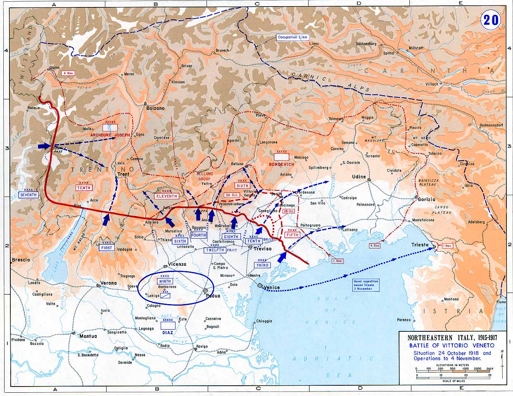
(비토리오 베네토 전투의 상황도입니다.)
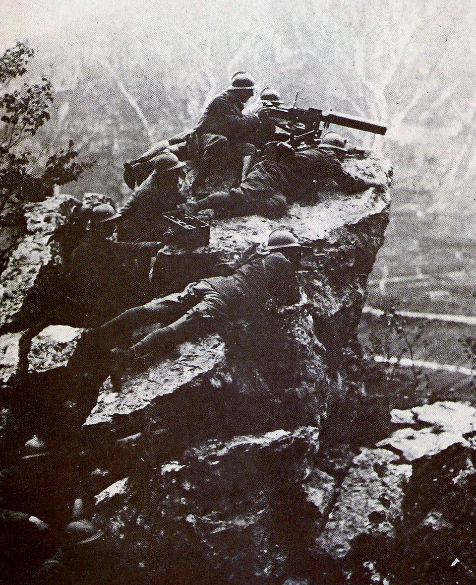
(비토리오 베네토 전투 당시 그라파(Grappa) 산에서의 이탈리아군 기관총 팀의 모습입니다.) 그 상황에서 이탈리아군은 재빨리 피아베강 전선을 넘어 전진하여 우디네와 고리치아를 재탈환했을 뿐만 아니라, 45만에 가까운 포로를 잡았습니다. 그러나 가장 중요한 것은 탐나는 영토에 깃발을 꽂는 것이었습니다. 종전 바로 전날인 11월 3일에는 서둘러 트렌티노 산악지대에도 병력을 투입하여 트렌토에 무혈입성했고, 도저히 단시간 내에 지상군으로 닿을 수 없었던 트리에스테 항구에는 해군 함대를 파견하여 입항, 상륙했습니다. 뿐만 아니라 종전일 11월 4일이 지난 뒤인 11월9일까지, 볼차노(Bolzano)와 알프스 국경선인 브레너 패스(Brenner Pass)까지 병력을 진주시켜 이탈리아 깃발을 꽂았습니다. 왜 그런 식으로까지 억지로 깃발을 꽂았을까요? 당연히 이제 진행될 종전 후 평화 협정에서 이탈리아가 더 많은 땅을 차지하도록 목소리를 내기 위해서였습니다. 과연 이탈리아는 런던 조약에서 약속받았던 영토들을 다 차지할 수 있었을까요?
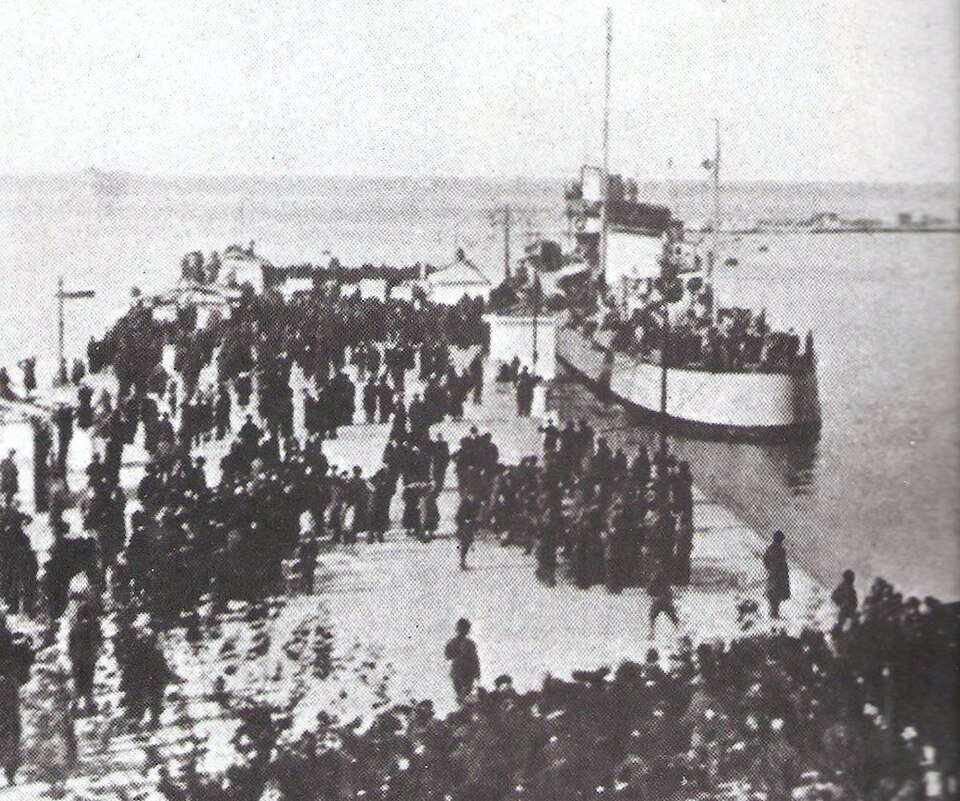
(11월 3일, 서둘러 트리에스테 항구에 입항하여 상륙하는 이탈리아 해군의 모습입니다.)